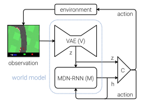
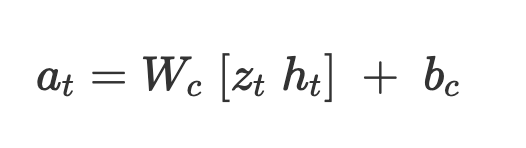

Introduction
This paper presents a neural network model that can learn by training in its own simulated environment. The model uses vision, RNN and control module which is very similar to how a human perceives its surroundings and build an internal mental model and uses this representation to predict future events. This approach helps humans to perform reflex actions, and this is how a baseball player is able to hit a ball by predicting its position.
World Model
The model comprises of mainly three tasks: visual representation V, memory modelling M and control C. Every time an agent receives an observation from the environment, it encodes into compact version and feed it to M. The memory model is a RNN which makes prediction on the future state of the input sequence. It also produces a feedback loop, not only learning from the current data but from historical instances. The controller takes representation from both V and M and select actions that can maximize the reward. and the agent performs action which impact the environment.

C is a single layer linear model, here W and b are weight and bias vector that maps the concatenated input vector [z, h] to output action vector a.

Car Racing Dream
The authors present an experiment of training a race car. The agent is trained to drive using its own dream model and later it is asked to produce probability distribution z, given current state and this sample is used as real observation. The steps taken in this experiment are:
- Collect 10,000 rollouts from a random policy.
- Train VAE (V) to encode each frame into a latent vector z.
- Train MDN-RNN (M) to model P(z)
- Evolve Controller (C) to maximize the expected cumulative reward of a rollout.
Strong Points
The authors approach is quite interesting of generates an environment using the agent’s internal world model and transferring the policy back into actual environment. This technique will be very useful in training the future models, where they can be trained as many times as possible in a simulated environment. And the performance can be easily tweaked using backpropagation.
Weak Points
This model has some limitations when it comes to retaining its trained data. The model does not have any feature to retain all this learnt information. As a recommendation, the future model can have a memory module along with the other module where it can store all the historical data.